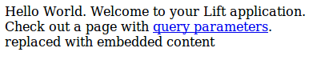
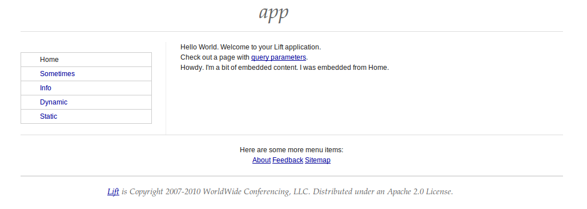

3.3 View First
Once the access control is granted by SiteMap, Lift loads the view related to the URL. There are many mechanisms that Lift uses to resolve a path to a view, but the simplest is a one to one mapping between the URL path and the files in
/src/main/webapp. If the URL is
/index, then Lift will look for the localized (see
8.1 on page 1↓) version of
/src/main/webapp/index.html. Once Lift loads the template, Lift processes it to transform it into the dynamic content you want to return in response to the URL input.
3.3.1 Page source
Let’s look at the page source:
index.html
<!DOCTYPE html>
<html>
<head>
<meta content="text/html; charset=UTF-8" http-equiv="content-type" />
<title>Home</title>
</head>
<body class="lift:content_id=main">
<div id="main" class="lift:surround?with=default&at=content">
<div>Hello World. Welcome to your Lift application.</div>
<div>Check out a page with <a href="/param/foo">query parameters</a>.</div>
<span class="lift:embed?what=_embedme">
replaced with embedded content
</span>
<div>
<ul>
<li>Recursive: <a href="/recurse/one">First snippet</a></li>
<li>Recursive: <a href="/recurse/two">Second snippet</a></li>
<li>Recursive: <a href="/recurse/both">Both snippets</a></li>
</ul>
</div>
</div>
</body>
</html>
We can open the page in our browser:

3.3.2 Dynamic content
The template is a legal HTML page. But there are marker in the page to tell Lift how to interpret the HTML.
If the <body> tag contains a class attribute lift:content_id=xxxx, then Lift will find the element with the matching id and use that as the starting point for rendering the page. This allows your designers to edit and maintain the pages in the same hierarchy that you use for your application.
3.3.3 Surround and page chrome
The template processing starts with:
<div id="main" class="lift:surround?with=default&at=content">
The class attribute lift:surround?with=default;at=content instructs Lift to surround the current Element with the template named default.html (typically located in the /templates-hidden/ directory), and place the current page’s content at the element with the “content” id.
This pattern allows us to wrap a common chrome around every page on our site. You can also specify different template to use for surrounding. Further, the template itself can choose different templates to use for surrounding.
In addition to surrounding the page with chrome, you can also embed another file. For example, you could have a shopping cart component that is embedded in certain pages. We embed with:
<span class="lift:embed?what=_embedme">
replaced with embedded content
</span>
Once again, the command is signalled with a class attribute that starts with lift:. In this case, we embed a template from the file _embedme.html.
The resulting dynamically generated page looks like:

(C) 2012 David Pollak